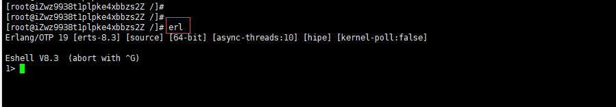

注意，安装erlang的版本最好安装20.3版本，19.3版本可能有一些问题
到erlang的官网http://www.erlang.org下载erlang的源码包

上传源码包到linux服务器的/opt目录下并解压缩
配置安装
需要先安装gcc等，命令：yum -y install make gcc gcc-c++ kernel-devel m4 ncurses-devel ncurses openssl-devel perl
进入到上一步中erlang解压的目录下cd /otp_scr_19.3，输入命令：./configure --prefix=/opt/erlang --with-ssl -enable-threads -enable-smmp-support -enable-kernel-poll --enable-hipe --without-javac
编译erlang源码并进行安装
添加系统环境变量
编辑/etc/profile文件，在文件的最后添加如下内容：
验证erlang是否安装成功
输入erl命令，如果出现如下信息则说明安装成功了
